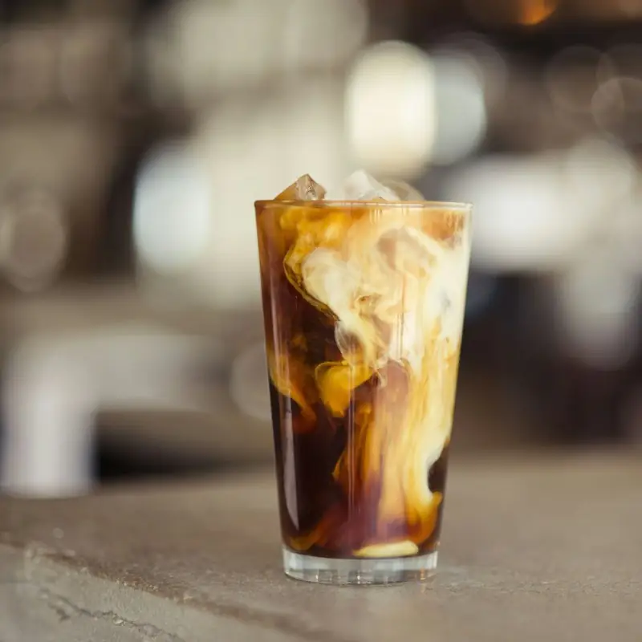
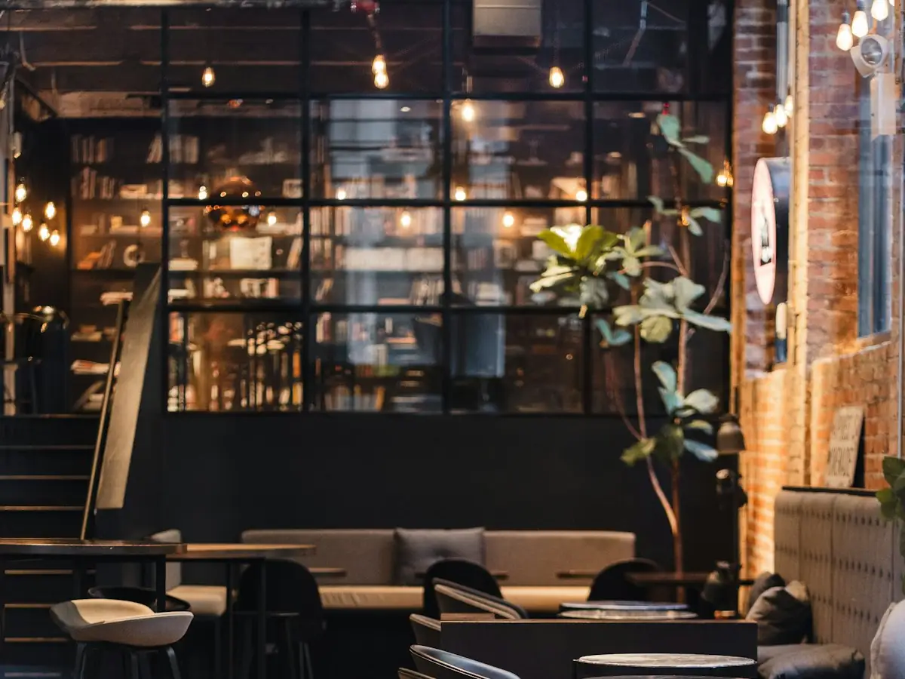
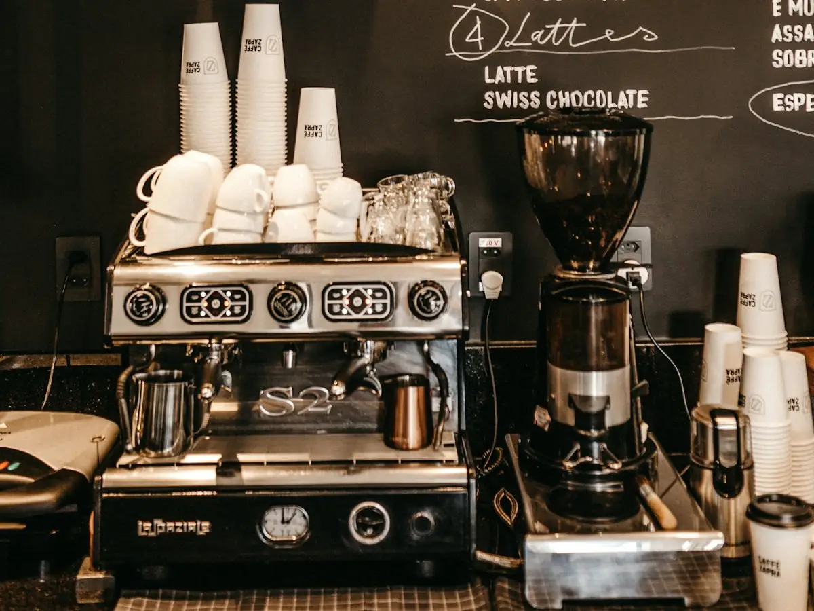

Es Kopi Susu Tepas
Espresso, susu segar, dan gula aren cair.

Tempat ngopi santai di tengah Kota Cirebon. Pesan untuk diantar, ambil sendiri, atau duduk lama sambil kerja.

Meja panjang dengan colokan di setiap kursi, Wi-Fi cepat, dan musik pelan. Bisa reservasi meja untuk 10–20 orang untuk arisan atau rapat kecil.
Es kopi susunya pas, tidak terlalu manis. Tempatnya enak untuk kerja seharian.
Pesan lewat WhatsApp, 20 menit sudah sampai kantor. Croissant-nya masih hangat.
Reservasi untuk arisan 15 orang, dibantu atur meja dan menu paket. Puas.
Kota Cirebon (alamat contoh). Parkir motor dan mobil tersedia.
Senin–Jumat: 08.00–22.00
Sabtu–Minggu: 08.00–23.00
Hari libur nasional tetap buka